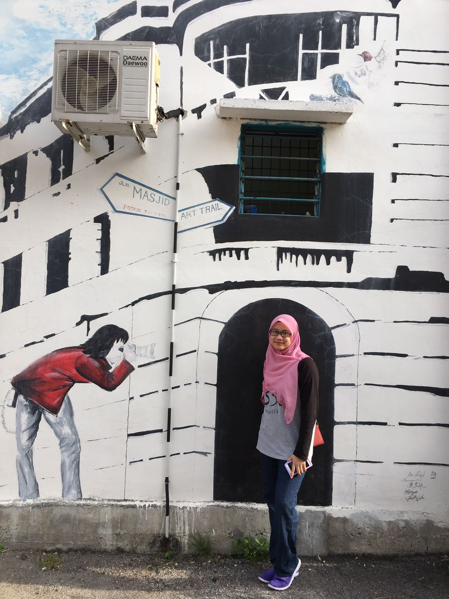

The Bride
By Groom
One of the most selfless and strong person I’ve ever known. Highly tolerable, patient and a caring person. Always
positive and know how to cheer people up with her charm. A firm believer that equality and respect are important
fundamental in this world. Focus on positivity and happiness.
People may see her as happy go lucky and a loud person. However in reality, she is still all that, but she is more
of the quiet one and she would listen more than do the talking itself. This is why it is always safe to tell any
secret to Nadia.
Nadia is also a very introvert person. She can be happy by just staying at home and always claimed that there are so
many things to do at home which is somehow a good thing because you don’t have to make lots of efforts to make her
happy (hehe joking). But unlike me, I can’t imagine sitting at home for a long time without talking or meeting
people?
Hence, relating with her real character which is very quiet. But she is a very strong person when she has to be. She
knows when the situation and people surrounding needed her, she can be the strongest person that you can imagine.
Maybe not physically, but mentally she is and I’m proud of her. But of course I will do my best to be strong and
take care of her as much as I could.
She is also someone who keeps her feelings to herself. Man I think it took us more than one year for her to finally
open up to talk about herself with me. She just couldn’t express her feeling as she usually talked to her diaries.
But most importantly is how well and kind she treats my parents when meeting them. She’s very polite, respectful and
a caring person. After 7 years knowing and getting to know her, I certainly believe that she is really the one and
we can fit very well together.
By Bride
Well okay this is kind of awkward having to write about yourself but here goes. Well I’m the second out of five
siblings, I have a crazy older sister (though I’m crazier I’m sure, like I talk to myself and to objects as if they
are human on a daily basis), a younger sister who’s less than a year apart, hence sometimes we are mistaken to be
twins (mum used to dress us the same which didn’t help, and now we are getting married together so duhhh), an only
baby brother (and will forever be my baby brother) and our youngest sister (who is always mistaken to be older than
me because I’m younger looking (though honestly it’s just because I’m the smallest)).
Well I am a proud introvert like yasss to being at home:
-
reading (and when I read I would go all out to finish it in a day but would stop for a few seconds and hold my heart when the scene is too heartbreaking or too cheesy or whatever (like my heart beat would just escalate that it hurts sometimes), because I’m reading it as if I’m living the story and whatever is conveyed, I felt it wholeheartedly and it’s crazy how it just played with my heart)
-
exercising (yes this is my new muse now especially running)
-
listening to music (okay fine truth to be told K-pop, or to be more precise currently mostly (only) BTS), and
-
dancing (and as long as there’s good music I can dance anywhere without shame or actually more to just grooving then actually dancing (honestly even without music playing, because there is always music playing in my head))

Though of course I enjoy few companies (family, cousins and friends) and usually when I’m with them, I kind of go
introvert who? Especially when it comes to Sekolah Seri Puteri (SSP), my no 1 pride, I kind of like let my guard
down and become really loud and all enthusiastic even though honestly I think I only laughed and shouted most of the
time. Talking about SSP, it is one of the most important leap in my life where someone from Sarawak flew to West
Malaysia at the age of 13 (always felt like Harry Potter being called to Hogwarts) and was enrolled into an all-girl
boarding school. This is where I learned to be very enthusiastic and my ability to hype just about everything, but
also the value of friendship, teamwork and just craziness. Anyway that was the best five years of my life, just love
my spirit and love about everything - ORION 0509, Emerald, cheerleading, KRS, I seriously can go on and on.
Alright, moving on, then I went to UNITEN for my prep to go to the States and well that’s where my life took a turn
because this is where I met the love of my life (okay cringe), then it all went down to history. I went to Drake to
where he was and just let our story bloomed. Though in Drake is where I learned different kind of struggles and had
different ups and downs but that’s where I finally get to know my true friends. So with all that said, here we are
now. So I guess that’s enough about me. Cheers!
The Groom
By Bride
Well writing about myself is awkward but writing about him made me kind of shy. But well where should I start? So
it all started in UNITEN, where he loves to tease me especially with his antics of kamek kitak ketuk (because I’m
Sarawakian) and I always replied with “It is kamek kitak ketuk la”, since it made more sense. Then it went to
where he needed help with TOEFL (though there were others too) and to constantly texting.
Here he was so caring, always ensuring that I’ve eaten. Always taking care of me I suppose and he kind of always
give advices that open up my eyes (because I’m so naive and gullible, sometimes still am but is so much better now,
at least that’s what I like to think). Well he really opened up my heart by being really caring and loving to the
point that I said if it’s him, then its okay (yes cringe, I know, but I seriously wrote that in my diary back in
2010).
So fast forward to where we are now, he is seriously still loving and caring and such a sweetheart at times, and
despite all the crazy things I’ve done, here he is still with me. Plus he really loves his family, like he always
talk about the things he want to do for them and it’s just really amazing because well I haven’t reach to that
level of thinking yet (I think about what I want to do in life instead of what can I do for my family, I guess it
could be his first child syndrome trait, but still it’s amazing).
Apart from that, he is a great listener and is always ready to help a friend in need. Many of his friends would come to him and he will be there to listen and help them wherever needed. Sometimes he would go out of his way to help others, and that is something we have in common I suppose. We both would always want to try to help anyone in need as possible as we can. Other than that, he is so hardworking, like he really really worked hard for his goals, to be better, to do better, to strive better. Sometimes he worked too hard, he don’t know how to rest. I think I’m going all over the place now, so let’s conclude.
Other than that, he is so hardworking, like he really really worked hard for his goals, to be better, to do better,
to strive better. Sometimes he worked too hard, he don’t know how to rest. Please rest sometime, will you? It’s okay
to take a break at times. Really. Stopping for a day wouldn’t harm. Okay I think I’m going all over the place now,
so let’s conclude.
I mean we do go through all the ups and downs of a relationship and no one is ever truly perfect, but all in all, he
likes to tease me, he’s funny, he loves me despite how crazy I am (and I can go from happy crazy to emotional
hormonal crazy in seconds), he cares for me, he would do anything for me and he truly makes me happy. Hence, here I
am, all ready to officially be his.
By Groom
It feels really weird to write this as I never own any diary in my life. However since this is a lifetime experience
for the happiest day of my life, I told Nadia “Okay, I’m down for this”. So to start, I’m going to be 26 years old
this year. In fact me and Nadia were born on the same month as our wedding month. I am the eldest out of three
siblings with a brother and a sister who are currently studying in university.
Family has always been (and always will) be my priority and nothing can top that. Being the eldest in the family and
having an age gap of 6 & 7 years apart with my siblings definitely sparked a higher sense of protection and
attention towards them in me.
Other than that, I value friendship very much. I enjoyed having several close friends back in school, but I truly
learnt the value of friendship when I enrolled in SASER after PMR. Here, we went through the hustle and hardships
together during our 2 years in school. I now believe the saying “High school friends are your lifelong friends”.
They are the one who can just click, talk and laugh together even though you have not met them after some time.
These are my closest circle that I will forever treasure.
Then I enrolled in UNITEN for my overseas prep and met a bunch of good friends and Nadia (I will describe more on
our meeting in the next section). I pursued my study in Drake University (Drake) starting from Aug 2011 and was
joined by Nadia a year later. I would say that I had a roller coaster journey here but it is a memorable one. Now
that I am done with my studies, I started my career journey in EY and has been stuck here ever since.
I am a huge football fan and Liverpool is my favourite team. Currently, I am trying to keep up with a healthy
lifestyle. Well it’s because I gained 25 kg in a span of 4 years during my time in Drake (yes I know it’s crazy,
that is why i need to be super dedicated in keeping up with a healthy lifestyle). It is a good thing that Nadia is
also together with me in this journey to be healthier.

Story
Here's our story.
Jun 2010
The first time we met. Our first introduction was “Have you been to London?” where Shafeeq asked in one of
our activities during orientation. Since then, Shafeeq has been teasing Nadia non-stop which annoyed her a
lot.
Dec 2010
We became close when we helped each other a lot in academic and all the other stuff.
Jan 2011
It was the start of something new. We began to know more about each other.
Aug 2012
Nadia came to Drake University and enrolled in same university as Shafeeq.
May 2015
We successfully graduated from Drake University with both families were present for the memorable occasion.
Jan 2017
Shafeeq met Nadia’s parents and expressed his intention for their daughter’s hand in marriage.
Oct 2017
Shafeeq and his family came ‘merisik’. Discussion was done and date of nikah and reception were set on that
day.
Jul 2017
We will be getting married InsyaAllah.
Bridesmaids
Our lovely girls.
Wanie
Paternal Cousin
The Bridesmaid
Best cousin during primary school, we used to go to school together, and we rock that School of Rock too hard
and I remember every morning she would narrate her dream. Out of us cousins (the ladies I mean) I would say
Wanie is the most matured, well at least she could make decisions better compared to Leen and me (who are older,
hahaha).
The Bride
When I think of my childhood memories, Nadya will always be in them with me; the prominent presence in my
journey to growing up through the games, the dances and all those times. Even now, when all our cousins are much
older the games, the dances and all these times are precious to me.
Niesah
Paternal Cousin
The Bridesmaid
The youngest in our cousin group but with the most curious and unexpected questions, and someone who would
always mix up our ages every time. But at least when it comes to food, she knows what she wants, making it
easier for us to decide (or is it?). And I would say because both of us are the second child in our family with
an older sister, we both are pretty similar in thinking and actions (a lil bit maybe), and both of us are
bookworms.
The Bride
Nadia is my elder cousin & neighbour that I grew up with. As a child, I remember her as an honest and obedient
little girl with a strong will but is always considerate of others feelings. Growing up, she has matured into an
enthusiastic, cheerful and kind-hearted 26 year old woman with a signature loud laugh. The sound of her laugh is
directly proportionate to Nadia's level happiness and comfort. As an elder cousin, her successful academic
achievements were a benchmark I had to catch up with and maintain. Nadia is a dreamer, not a fighter. She is
sentimental, a worry wort and prefers comfort over style. Left to her own devices, Nadia fills her time with
K-pop, running and planning. The Nadia I know is particular, extra, health-conscious and a good listener. Her
avid imagination and passionate heart keeps me wondering and worrying what the future Nadia will get up to next.
Shasha
Orion 0509
The Bridesmaid
She’s almost like my twin because us being the second child made us have almost similar traits, hence
understanding each other at a whole new level, thus its always easy telling her things, because we might go
through the same thing or have the same view on things (& having someone back-up on your feelings is just
amazing). But even with that similarity, we are still different where she is more of a practical person and me a
theory person maybe.
The Bride
She is kind and humble.
A good listener and a very accepting person. Hence, she does not judge people or a situation quickly.
She is smart and a bookworm.
She can also be loud, cheerful and very enthusiastic but at the same time, be shy and quiet.
She is dedicated and disciplined.
Most of all, she is mentally and emotionally strong.
She is like my safe box.
She is also like my very own Twitter.
She is my bestfriend, my true friend.
A very dear friend to me. ♥
Bey
Orion 0509
The Bridesmaid
Bey is a lot of things to me, we got really close when we shared the same dorm in F3, and we could talk about
anything, lots of things (mostly our body, dance, music and sometimes deeper stuff which is great because
there’s not many that we could talk with on such deep topics). She’s the most outspoken in our group and she’s
my fave emo partner that I could ever ask for (we did go through this emo phase during high school).
The Bride
Nadia. She’s basically one of the most amazing people that I know. She has a beautiful mind, a kind heart and a
fierce spirit that can shake the earth to its core. Although, with all that said, her humble nature always takes
the upper hand. I’m glad we crossed paths, neddy. Truly.
Hanisah
Drake
The Bridesmaid
I wish we could be closer earlier on, like if we knew how things would turn out, I would have stuck by your side
from earlier on, but then again maybe this is how fate has turned out for us. And at least however it is, we are
brought together now, and you have helped me through the final year of Drake. She’s adorable and knowing her,
she’s someone with a lot of expressions that lights me up, and for that I truly appreciate and love how we are
together now (I mean together as in friends and close at that).
The Bride
Nadia is the MOST down-to-earth and carefree person I have ever known. She may look soft and sweet on the
outside, but knowing her I think she’s hardcore af and can rule the world if she wants to! Among the four of us,
(Sheikh and Nadia, me and my husband Syazwan), I befriended Sheikh first so I know how ruthless he can be.. But
then Nadia came and I was AMAZED realizing that she‚Äôs the only who can tame him üòÑ but they are both amazing
friends in their own way, so together they’re definitely a match made from Heaven. Appreciate you guys for
existing ♥
Maien
Orion 0509
The Bridesmaid
Always the first person to respond on anything in the group and will always be the trip leader for our trips to
anywhere. She’s as passionate as me on SSP, hence Im not alone in still standing by my high school, and its with
her where I started my love for running.
The Bride
The soul that lives in her body is one in a million.
Intan
Orion 0509
The Bridesmaid
She’s the Mama of Orion 0509 but the baby in the group and yet she’s the first to get married. We may not be as
tight as we are now when in school, but knowing her she’s strong yet soft, and honestly when she’s smiling and
posing for a pic, I always get the ‘Perempuan Melayu Terakhir’ vibe. But she’s also funny, witty and creative
(like sometimes I envy her handwriting, well act I envied many handwritings, you would know if you know how mine
looks like).
The Bride
Neddy, you're a friend and a sister who I always treasure. You're a gem who's like no other. You cheer us all
up, especially with your laughter. Your energy, your passion & your utter sincerity in friendship are really
amazing and never fails to inspire.
Zern
Orion 0509
The Bridesmaid
My fellow ARMY, our mafia, someone who laughs at the most simple things. Though despite being the mafia, she’s a
very caring person, always keeping in touch with people and always remembers to ask how they are doing.
Especially when she knows something is up, she would diligently ask how the other person is doing everyday until
things are truly fine, and this is amazing to me because it’s never easy to keep in touch with everyone.
The Bride
BTS!BTS!BTS üòç yasssss üíÉüèª my fangirling mate finally will tie the knot with her soulmate üò± as her friend,
i’m happy for her but as her fangirlingmate, honestly i’m crying cause who will fangirl with me in the middle of
the night, stay awake to see our favourite boy band BTS üòç (dont worry Shafeeq, you are still no 1 in her
heart) ☺ knowing her since high school, she's happy go lucky, energetic, the loudest, and kind, and obviously
has high spirit for everything she's involved in üòÅ (kena redha tetiba jalan dengan dia dekat mall tetiba dia
dance sorg2) üòÖ and neddy yang kite kenal sangatlah tak pandai say no to people üòÇ please someone teach her! I
dah give up üòÇ LBNL, I love U neddy to the moon, sun, planet 143430 and back to the earth again of course üòò

Ain Z
Orion 0509 & Maternal Cousin
The Bridesmaid
She’s was a friend first before knowing that she’s also a cousin. She, together with Zern, are the “mudah
terhibur” gang, always laughing on small things. But she’s the most organised out of all us, as in she plans
things in her life well, like she knows what she wants and knows when to have it, or at least that’s how I see
her.
The Bride
Neddy is:
- a wonderful person
- kawan yg tak berkira
- kawan yg sentiasa ada bila susah, bila senang
- Bila sakit ke, akan tlg jaga kita
- Sgt happy go lucky, gila2
- Someone who take care of all her friends

Mizah
Orion 0509
The Bridesmaid
Our PRS of the group, once she starts giving her advice, expect long messages which I appreciate and always
agree on. Also expect to have a clean table everytime you eat out with her because she would clean the whole
table, making the work easier for the waiters.
The Bride
Walking with Neddy in the dark is much better than walking alone in the light. Nothing else on earth to be
prized than being with her.

Leen
Paternal Cousin & Orion 0509
The Bridesmaid
Having a cousin, the same batch in boarding school, is a true blessing. She’s like my go to for any problems,
like I think I always invaded her with my problems during school (even now) but there she is always smiling and
listening intently, and helped me through it all. (And we have this thing during school where we would exchange
each other sappy, cheesy essays or just ideas that we wrote and squeal together due to the amount of cheesiness
and all, its silly).
The Bride
Diah is like a vitamin. The one that can lift up the mood at any occasions and can “cure” problems for people
around her. I’m lucky that we shared the same DNA (as in BTS DNA).

Kak Su
Maternal Cousin
The Bridesmaid
She’s quiet and we may not have much in common but what strikes me the most about her is that she’s always
smiling and laughing when we are all together, especially when the boys are making silly jokes or remarks or
just being silly as a whole.
The Bride
Nadia seorang yang tegas tetapi ceria dan seorang yang mempunyai matlamat dalam hidup.
A'a
Maternal Cousin
The Bridesmaid
When we were younger, everytime we went to Nek Aji’s house, we would be in the same group together with Nafis
and Lin. As far as I remember we were like two peas in a pod and one time during a camp that we attended, I
always admired her confidence talking in front of a crowd, something I can never be better at.
The Bride
Nadia is my cousin. She is so humble & nice. She is also very easy-going & friendly. We rarely meet but when we
get together we will spend time together with all the other cousins. Mostly our activities are laughing, talking
and eating until we get tired üòÇ
Groomsmen
Meet the guys.
Aidil
By Groom
Aidil is a funny guy who can just talk shit about anything to anyone. He has the ability to just click with
anyone, even though it’s his first time meeting those people. When we talk, I can just be quiet and laugh to his
exaggerations on things. A kind hearted person who always spares time to help his friends.
By Groomsman
I've known Sheikh for 9 years now and I have always known that our friendship will go the distance. I see the
both of us as eccentric. But more than that, Sheikh has proven time and time again how he truly cares for the
people close to him and will do what it takes to be there for them. I am grateful to be able to call him my
friend. The beautiful part is, in the same time I’ve known Nadia, the both of them have always complemented each
other. I truly believe that both Sheikh and Nadia bring out the best in each other and I wish them both the best
in this amazing journey called marriage insyaAllah.
Iqbal
By Groom
A workaholic person who is serious most of the time. When asked for help, he is able to provide solutions with
his own version of mind-maps, thanks to his hectic hours working as a management consultant.
By Groomsman
“Sheikh will stick with you through thick and thin. Evidence- He’s still a Liverpool fan despite the club not
winning any trophy for years”
Syazwan
By Groom
A cool natural leader that I’m very comfortable to talk to about life, relationships and views in politics. We
got close during my final year back in States when we used to play PS4 and watch movies together at my place.
And things got closer when he started his relationship with Hanisah, a good friend of mine whom now is his wife.
We always spare time to catch up and have double dates.
By Groomsman
Sheikh antara seorang yang daripada seorang senior di universiti yang mulut keras sikit, dan yang akhirnya aku
anggap sebagai darah daging sendiri. Sheikh sentiasa ada tatkala aku ada masalah sekecil-kecil seperti nak beli
buku Econs sehingga sebesar-besar dalam memilih dua jalan yang berbeza. Sheikh yang banyak memberi nasihat dan
tunjuk ajar dalam menentukan jalan kehidupan aku dari zaman Drake sehingga hari ini. Antara benda yang aku
takkan lupakan pasal Sheikh adalah dia lah yang melobi agar aku membina rumah tangga bersama kekasih hatiku dan
itulah antara keputusan maha-besar dan terbaik yang aku buat dalam hidup aku.
Tidak dilupakan juga kepada Nadia yang aku anggap sebagai kak long aku yang sentiasa memberi nasihat dan
petunjuk (lembut sikit dari Sheikh). Nadia (dan Sheikh) tidak pernah sesekali menghukum aku dan Hanisah walau
sebarai mana pun perangai kami.
Semoga perkahwinan dan rumah tangga kalian dipermudahkan dan diberkati-Nya.
Jabbar
By Groom
His facial expressions are enough to tell you how hilarious he is. One of my closest friends in UNITEN when we
used to hang out together. In fact, Jabbar is the person who was in the car with me the night when Nadia and I
texted each other which resulted in bringing our relationship to one level closer. And he’s marrying Nadia’s
schoolmate soon.
Jabbar is the person who was in the car with me when Nadia and I texted each other on a night in Jan 2011 which
brought our relationship to the next level.
By Groomsman
“Sheikh Shafeeq is a great guy to be friends with. He tried so hard to seem like someone who doesn’t care about
other people but in fact, he’s very thoughtful indeed. Nadia will be a very lucky person to have him as her
significant other as I believe he will take very good care of you in this journey called marriage Insyaallah.”
Wayne
By Groom
We only talked once when I was in EY and only became close during our secondment. A great team lead who always
backed his team up whenever issues arised. Jokes a round a lot but can be very serious when it comes to work. We
can just talk about everything especially when it comes to financial stuff. A good person to go to when I want
to consult on career advancements.
By Groomsman
In a room full of people, you’ll see this special brown guy, who is hardworking, kind and honest. He is blessed
with marrying Nadia; and hopefully in the years to come, he will be blessed again with pairs of ‘rezeki’
Dzikri
By Groom
My classmate back in SASER. A guy who has his own stand and stays firm by it even though his opinion does not
favor the majority. We know each other very well that even though we always argue on some matters, we never take
it to heart because we are able to come into agreement for the betterment of things.
By Groomsman
Sheikh is meticulous, organized and very good with his finances. He is a good friend and cares about people more
than people think he does. Nadia, you're in good hands. Congratulations.
Imran
By Groom
A die hard Liverpool fan whom we used to stay up and watch football together in the common room during our
school times. An influential midfield player who obtained a certificate as a referee besides having a team whom
he is the manager. Another classmate back in SASER that can always make time for each other until today when
needed help.
By Groomsman
Sheikh Shafeeq
How should i start? Hmm..yeah of course an enthusiast Liverpool supporter. When we were in SASER, Sheikh and few
other friends Aiman Ros, Kirin & Emi, we are the companion so called die hard fans to watch Liverpool game.
As a person, Sheikh is a nice guy. We are very close and share lots of things especially on work & life
experiences. He is very smart as well. Add Math is his piece of cake. Yeah everyone knows that. A good teacher
to me and to others. An ambitious guy with clear goals that he wants to achieve.
Well my friend, I would like to wish you Selamat Pengantin Baru & Semoga Berbahagia Selalu. I’ll pray for your
happiness & blessings in life. Can’t wait for this July.
Event
Bride's Side
Date: 4 August 2018
Time: 7.30pm - 10.30pm
Venue: The Great Hall, Borneo Convention Centre Kuching (BCCK), Jalan Keruing, Kuching
Groom's Side
Date: 21 July 2018
Time: 6.00pm
Venue: Grand Pacific Hall, Evolve Concept Mall, Level 3, D-2-7, Jalan PJU 1A/4, Ara Damansara, 47301 Petaling Jaya